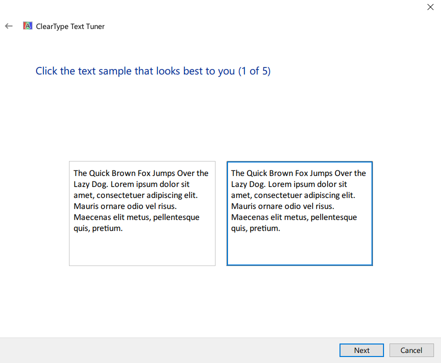
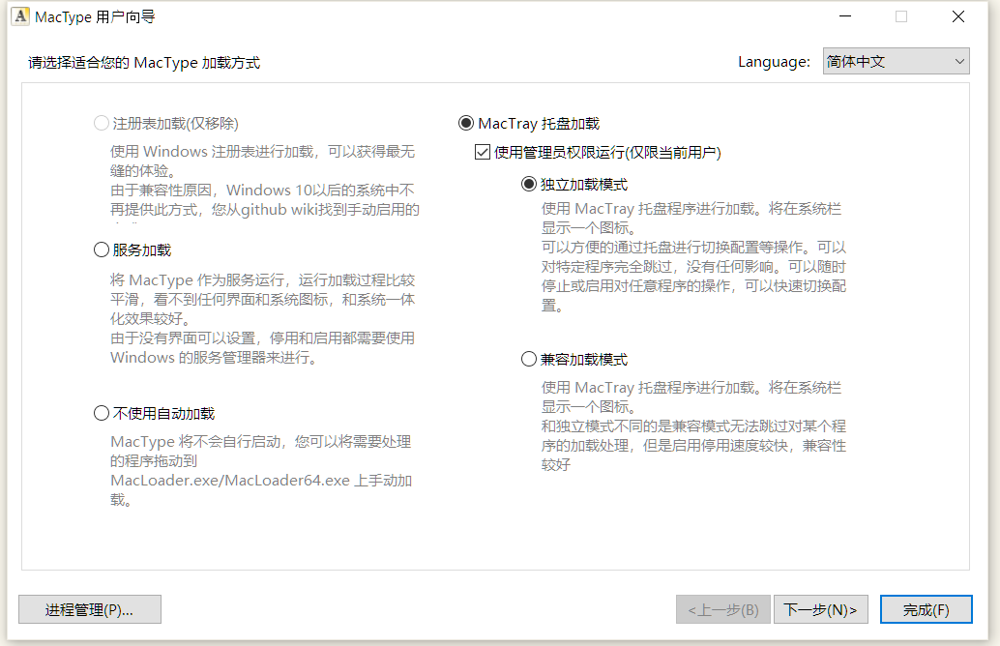
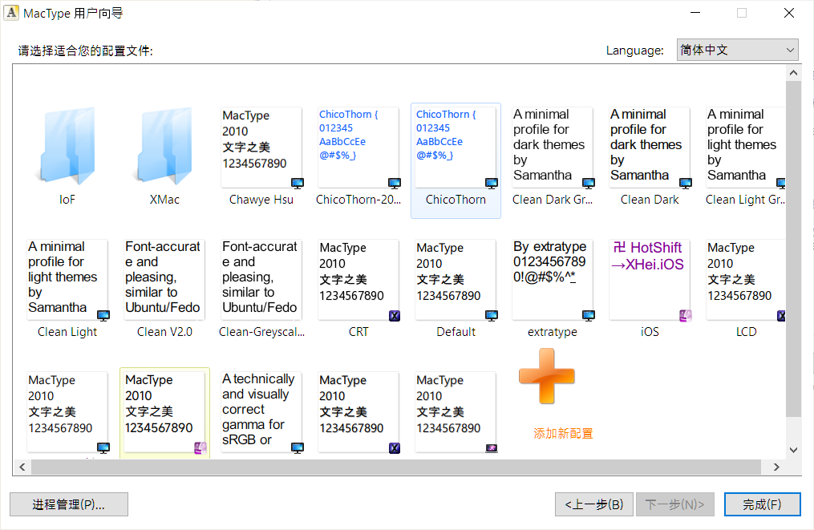
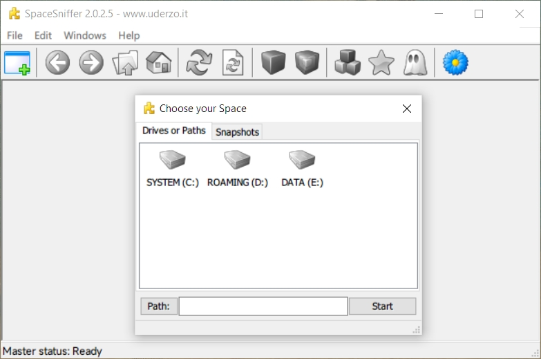
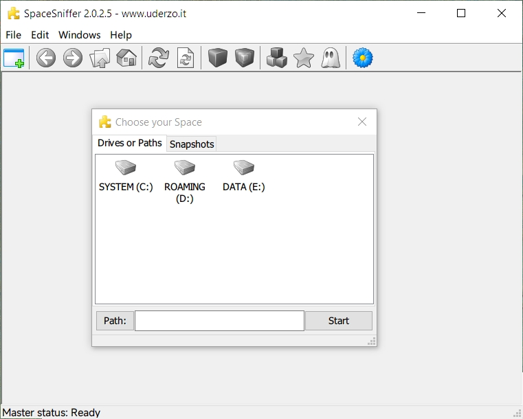
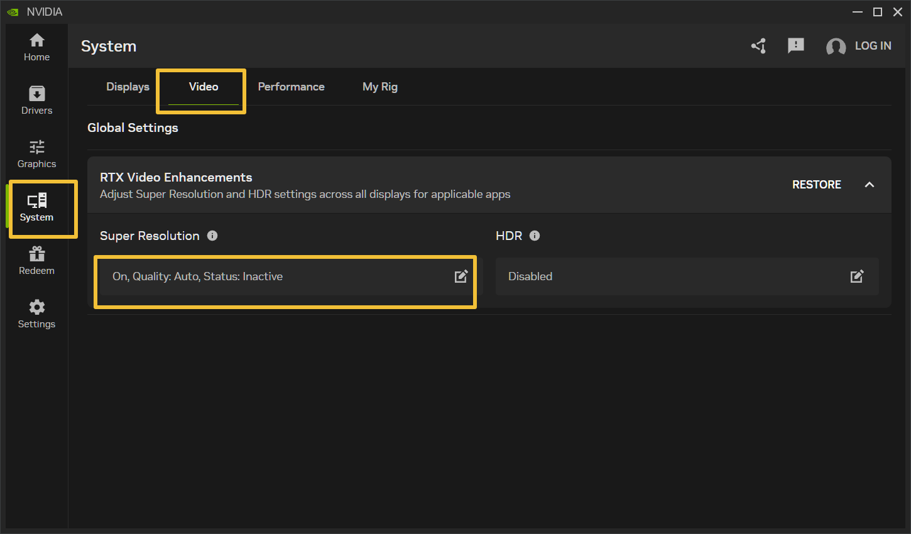

Windows 终极渲染优化指南
众所周知，Windows 是一座屎山。相同的 PPI 屏幕，Windows 的显示效果是明显不如 Mac 和 Android 的。
经过长期的测试和尝试，我整理出一套针对 Windows 渲染效果的优化方案，能够显著改善显示清晰度和观感，使其更接近 macOS 的视觉体验。
需要说明的是，本文主要作为方案的整合与收集，核心技术和功劳应归属于各位原始方案的作者。
基本知识
Windows 并行地存在两套绘图接口:
- GDI（Graphics Device Interface）
- DirectWrite + Direct2D 。
GDI
GDI 是 Windows 自早期版本起就支持的一套基础图形接口，它允许开发者通过简单的 API 实现窗口、按钮、图表等基本图形元素的绘制。GDI 的一大优势在于其广泛的兼容性，几乎可以在所有版本的 Windows 上运行，并且使用起来非常直观。
不过，由于 GDI 主要依赖 CPU 进行图形处理，缺乏硬件加速支持，因此在处理复杂图形、动画效果或高分辨率显示时性能有限。此外，GDI 的文本渲染质量也相对较弱，尤其是在小字号或旋转文本场景下，清晰度和可读性不如现代技术。
使用它来进行绘图的程序开发框架：
- 传统的 Win32
- MFC 应用程序
- WinForms
- wxWidgets
- JavaFX
- 旧软件
DirectWrite + Direct2D
随着图形需求的不断提升，微软推出了基于 DirectX 技术的 Direct2D 和 DirectWrite ，它们共同构成了现代 Windows 平台上的 2D 绘图接口。
- Direct2D 是一个硬件加速的 2D 图形绘制引擎，能够高效地渲染矢量图形、位图、路径、渐变等多种图形元素；
- DirectWrite 则专注于提供高质量的文本渲染，支持 ClearType 技术、子像素精度排版、多语言文字布局等功能，显著提升了文本的清晰度和美观性。
DirectWrite + Direct2D 是现在主流的绘图方案。
使用它来进行绘图的程序开发框架：
- WPF
- WinUI / UWP
- SkiaSharp
- Chromium / Edge / Chrome/ Electron 浏览器
- QT
- 新软件
具体操作步骤
1. Cleartype
Cleartype 对应优化的绘图接口是 DirectWrite + Direct2D 。
Cleartype 是 Windows 自带的功能，不需要安装任何软件。
想要使用 Cleartype 只需要再 开始菜单 搜索 Cleartype 点击打开即可。

然后根据提示，一步步选择你主观认为最清楚的那个文本即可，非常简单，没有任何参数配置。

2. Mactype
Mactype 是一款由 snowie2000 开发，对 GDI 进行重绘的软件。
（现在也能对 DirectWrite 重绘，但有时会有兼容性问题。）
Mactype 可在 Github 页面 Github snowie2000/mactype 中下载。
下载安装后，初次使用软件会弹出加载方式选择的页面。
这里使用 MacTray 托盘加载 + 独立加载模式 + 使用管理员权限运行 的加载方式。

点击 下一步 后，可以看到软件自带的一些预设文件。这些文件可以直接使用。

根据我本人的设备和使用体验来讲，我任务效果比较好的配置文件有：
- Chawye Hsu
- Clear V2.0
- Xmac\Xmac.LCD
老的预设只能对 GDI 修改，部分新预设能对 DirectWrite 进行修改。
我配了一套预设，预设仓库在 Ckrvxr/MactypeINI 中。
该预设功能包括：（改自 Xmac.LCD）
- GDI 和 DirectWrite 都进行字体渲染优化（重绘）
-
全局常见 Sans （Segou UI 和微软雅黑）字体替换为 Misans。
-
（计算机要安装全局安装 Misans 字体）
- （推荐的字体还包括 HarmonyOS Sans）
- 丑丑的等宽编程字体（Consolas、Courier New 等）换成 Cascadia Code。
- 始终使用矢量渲染，而非位图。解决 宋体 在字体大小极低的时候变成马赛克的问题。
如果按照默认路径安装，配置文件目录则在目录 C:\Program Files\MacType\ini 下。
把我的配置文件保存下来，放入目录中就能在配置文件选择时看到。
放到配置文件目录中，在软件中选择使用就大功告成啦！
我自己本人的配置也会不定期地进行更新和维护。
兼容性的问题
使用 Mactype 时，大部分的兼容性问题来自于字体替换功能。原因在于：
- 有的软件会使用字体中非公共区域中的符号，如果代替的字体没有这个符号，或这个符号不对，软件就不能显示字符和部分图标。（经实测， Arial 是绝对不能替换的。）
- 字体替换流程本身的兼容性问题
当遇到乱码或字体不能显示后，第一步就是在配置文件 .ini 中的 ExcludeSub 中添加不需要替换字体的进程。
; ----------- Programs Excluded from Font Replacement ----------------
[ExcludeSub]
; Sysinternals Suite
Autoruns.exe
Autoruns64.exe
procexp.exe
procexp64.exe
Procmon.exe
Procmon64.exe
; Microsoft Office
EXCEL.EXE
POWERPNT.EXE
WINWORD.EXE
; Wallpaper Engine
ui32.exe
; WPS Office
wps.exe
Mihomo Party.exe
MATLAB.exe
...
如果对单独进程关闭替换字体不管用，可以尝试对单独经常替换字体也不不渲染。即在配置文件 .ini 中的 UnloadDll 中添加不需要加载 DLL 的进程。
; ----- Programs not Rendered or Replaced Fonts (DLL Not Loaded) -----
[UnloadDll]
; Desktop Window Manager
; dwm.exe
; Windows Subsystem for Linux (WSL)
wslhost.exe
wsl.exe
; Cygwin/MSYS2
gpg.exe
pacman.exe
; Altium Designer
X2.EXE
; Process Lasso
ProcessLasso.exe
如果还是不管用，则可以尝试下面的方法：
- 关闭字体替换功能
- 关闭对 DirectWrite 加载
- 关闭实验性的功能 ColorFont 和 ArmBreaker
; ------------------- Font Loading Configuration -------------------
HookChildProcesses=1
FontLoader=0
FontLink=2
UseMapping=0
MaxHeight=0
MaxBitmap=0
FontSubstitutes=1 ; <--- 字体替换功能，1 为开启，0 为关闭
DirectWrite=1 ; <--- 是否对 DirectWrite 加载，1 为开启，0 为关闭
[Experimental]
ColorFont=1
ArmBreaker=2
具体可参考 snowie2000/mactype Wiki 和 Issues · snowie2000/mactype 中讨论与解释。
其他建议
部分老软件渲染模糊的解决方法
部分老软件渲染模糊，原因在于部分老软件未更新支持每显示器 DPI 感知（Per-Monitor DPI Awareness） ，导致系统强制拉伸位图而非矢量重绘，产生了模糊。
解决方法：
- 右键软件的 exe 文件 → 属性 → 兼容性 → 更改高 DPI 设置 。
- 勾选 替代高 DPI 缩放行为 。
- 保持执行缩放选择 应用程序 。
- 点击 应用 后重启软件。
- 如果效果不理想，可以尝试 系统 、 系统（增强） 。
这个替代缩放的方法只对少部分软件能完美重绘。
前后对比：

N 卡的视频超分
NVIDIA 的视频超分辨率 (VSR) 功能效果很好，可在提升视频锐度的同时保持画面自然，无明显瑕疵。
硬件要求：
- 仅支持 RTX 30/40 系显卡（RTX 3050 及以上）
- 驱动程序需 ≥ 551.23 版本（2024年3月后发布）
开启步骤：
- 系统托盘右键点击 NVIDIA 图标 → 选择 NVIDIA App
- 点击 系统 → 视频 → Super Resolution
- 选择 * *ON → 质量选择
Auto - 点击 OK 保存设置

Edge 中视频增强不起作用
如果 Edge 中视频增强不起作用，就把在Edge的地址栏中输入 edge://flags/#edge-video-super-resolution 这个地址，将 edge-video-super-resolution 设置为 Disabled。
没错，关闭就是打开。😇